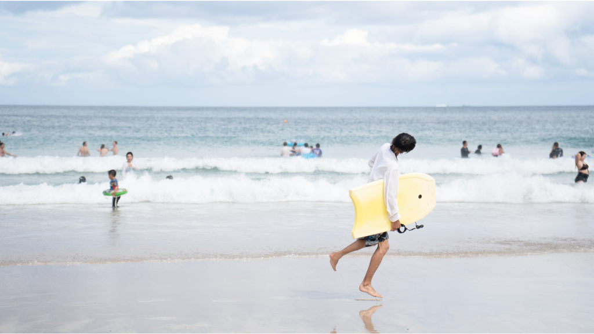
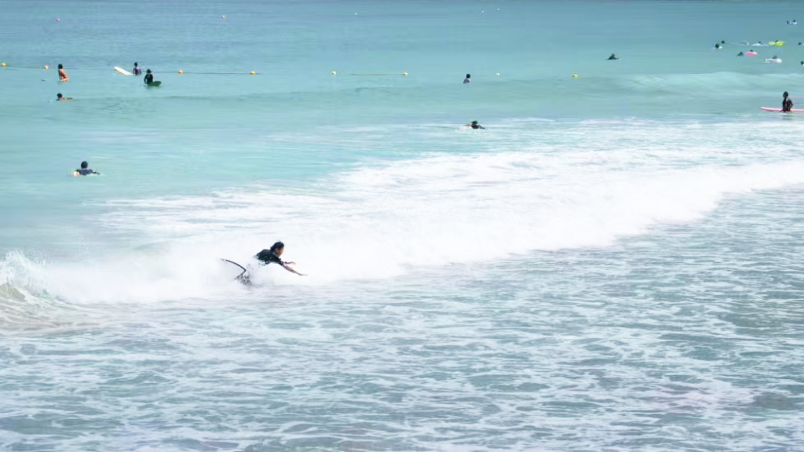
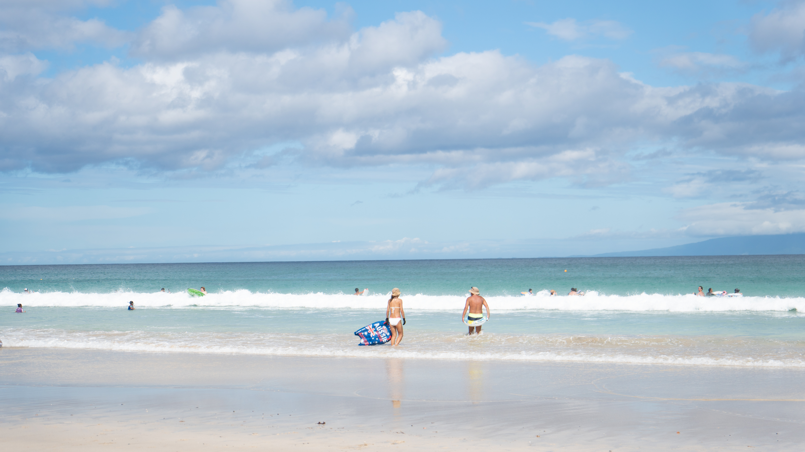
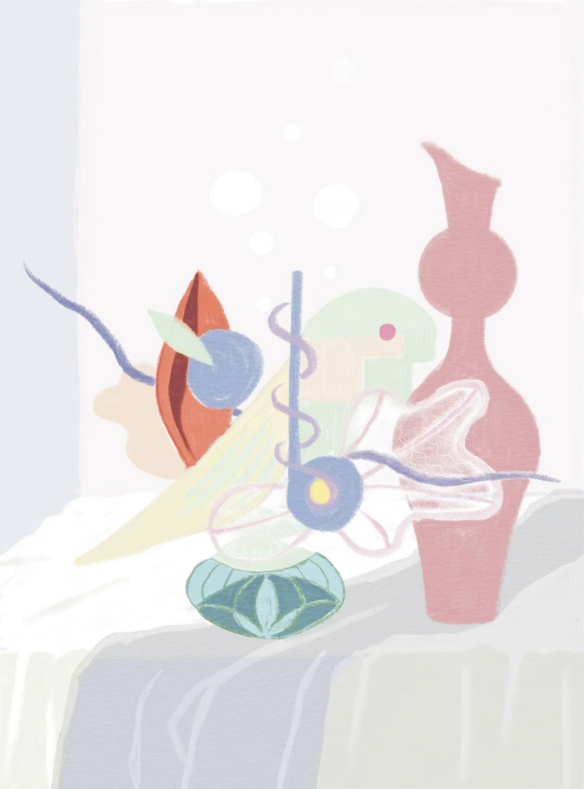
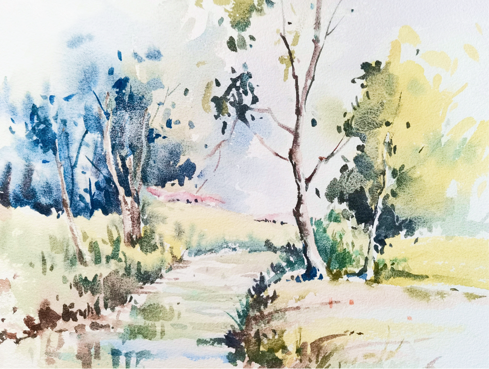
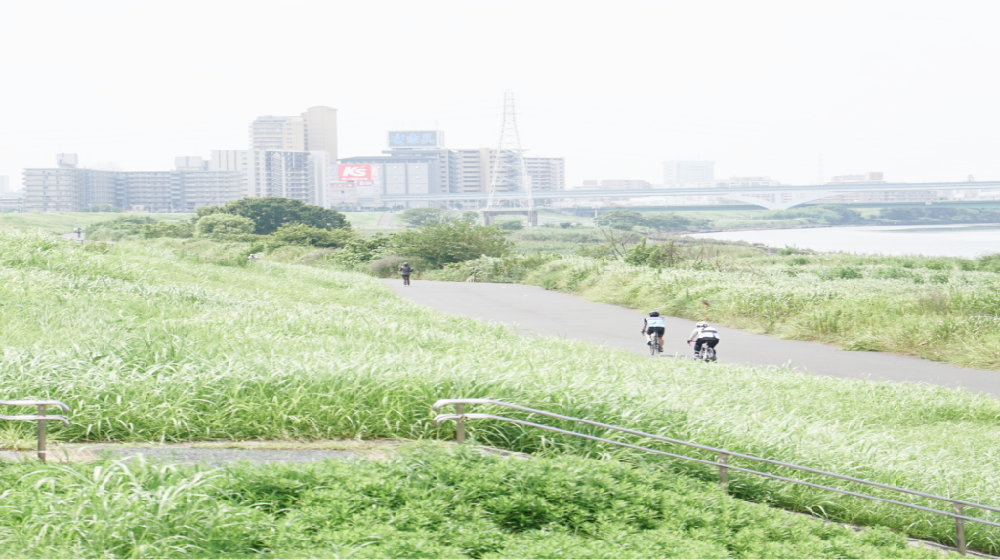
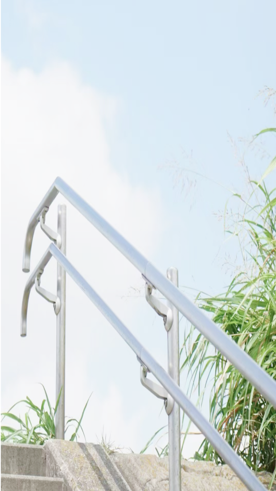
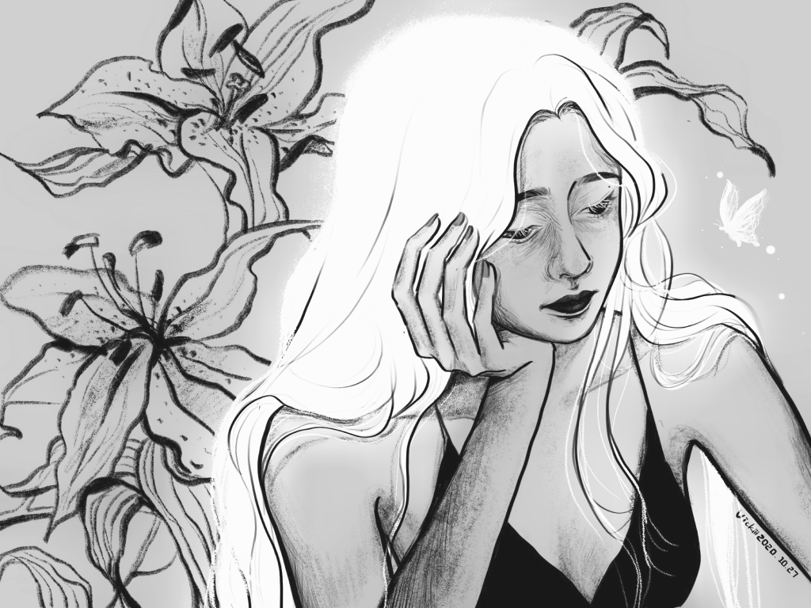
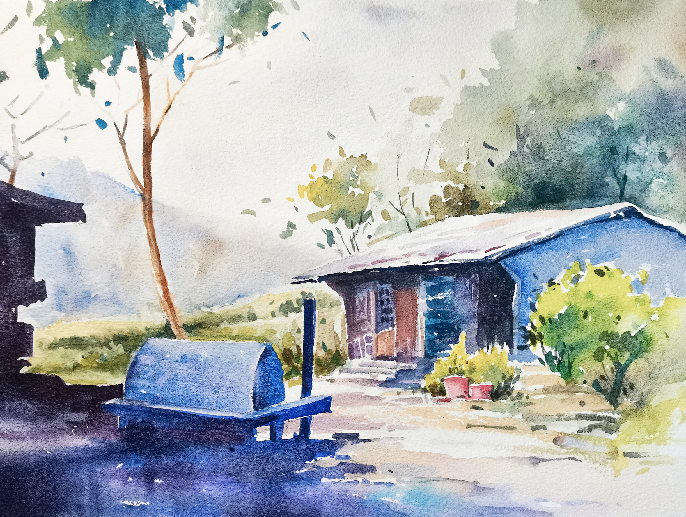
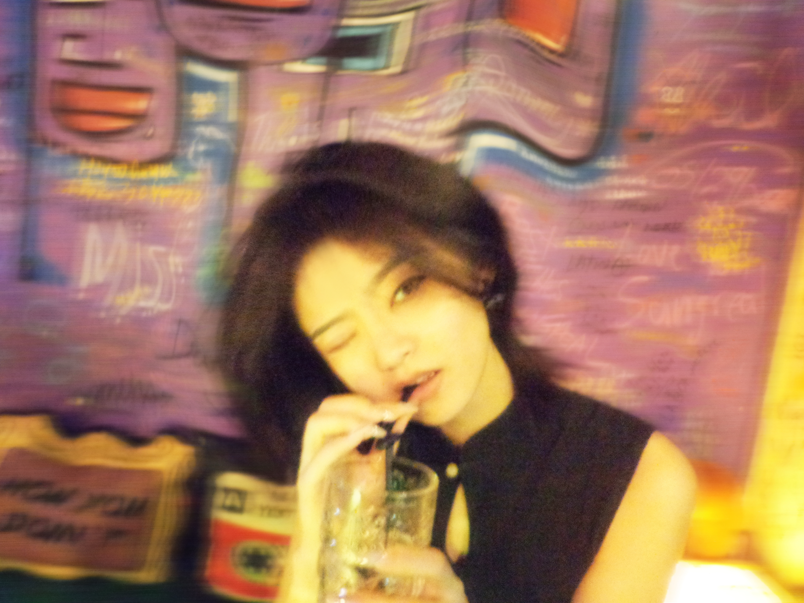

Xauro V
An interaction designer and product manager, currently in the second year of my master’s in Interaction Design. Curious across disciplines, she enjoys making things and believes thoughtful design can create meaningful, lasting value.
What I believe
AI is fuel, and people are the spark.
Tools can extend our reach, purpose and imagination give them meaning.
Most importantly, know when to lead and when to let AI lead
Design for Meaning
Design for Fun
Selected Works
project name 01
project description 01
Gallery











👋Hello，I‘m Xauro V
A Product Designer with an architectural background and PM experience. I am a curious, lifelong interdisciplinary learner. I served as a Product Manager at Tencent and Insta360, and I am currently interning at Sephora. I am looking for full‑time Product Designer and Product Manager positions in 2027.
Education
Tongji University, Collage of Design and InnovationInteration Design / M.Eng
Hunan University, School of Architecture and PlanningArchitecture / B.Eng
我在珠海长大
珠海是一座阳光充足、四季温暖的海滨城市，有岛屿、山丘，也有漫长的海岸线。
在这里长大，让我自然而然地亲近山海，也让我始终向往蓬勃的生命力与美。城市舒缓的节奏给了我空间去创造，也让我愿意慢下来，把真正有价值的事情打磨得更好。
喜欢用工具把美好的想法做出来
画画是我从小坚持到现在的爱好。
我也喜欢写作、摄影，在社交媒体上记录日常。
创作工具一路在变：从纸笔到 iPad、相机，再到 3D 建模、渲染和 AI。成长在快速变化的时代，让我习惯不断适应，也愿意持续学习。
我很享受亲手把一个想法做出来，让它从 0 到 1 成为现实。
我也享受解决真实世界中的问题，将市场需求转化为兼顾功能与美感的设计方案，做出人们愿意使用、真心喜欢的产品。
继续探索
我曾在建筑设计院工作，也先后在腾讯和影石担任产品经理，目前在一家全球美妆企业参与电商产品工作。
一路上，我也不断发现新的兴趣：手工、观鸟、街舞、摄影、旅行、徒步、做饭、养猫和逛公园。
比起停留在想象里，我更愿意亲自去做。真实的体验能帮我更准确地理解一件事。
我很在意一件事是否有意义，也会试着从每段经历中找到值得留下的东西。
人生由无数或短或长的片段组成。在找到愿意长期投入的方向之前，持续尝试、积累经验、认真生活，就是我此刻最重要的事。
AI 时代，怎样做一名好厨师
当每个人都能“做菜”时，精心烹制的菜肴、独家的配方和标准化预制菜，依然有着完全不同的价值。
好食材：好想法来自广阔的视野，也来自对生活细节的深入观察、同理心和洞察力。
好工具与好手艺：熟练使用合适的工具，同时培养审美、判断力、资源意识、细节把控、执行力和规划能力。节奏与火候，也需要在实践中慢慢磨出来。
找到食客：建立清晰的个人表达，让别人能快速了解和体验作品，并在目标人群聚集的地方主动展示。
过去的经历帮助我打下了前两方面的基础。现在，我也在学习个人品牌、传播、编程和 AI，希望让更多人看到我做的东西。